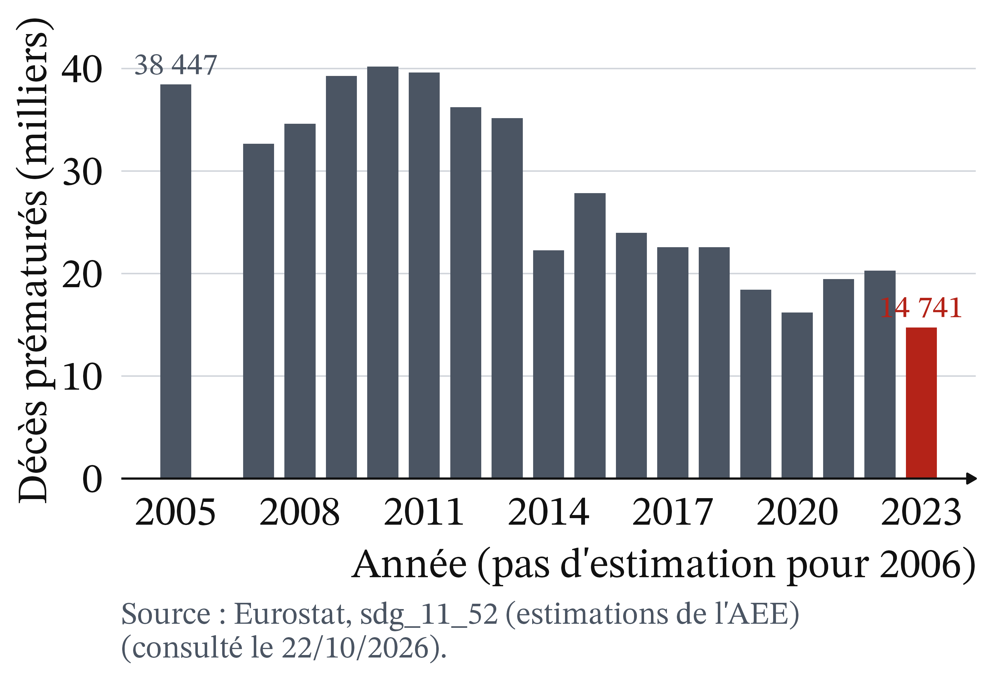
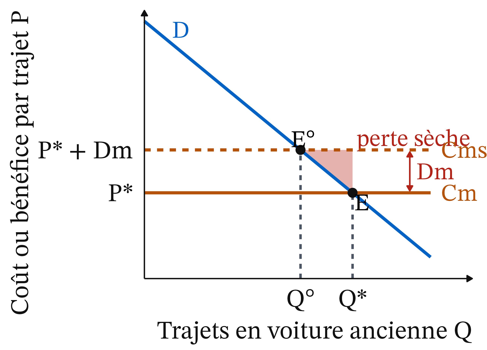
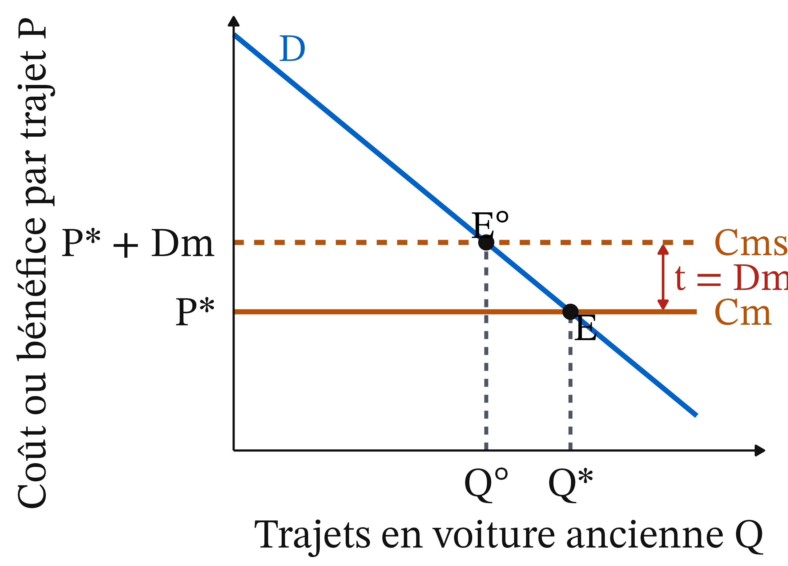
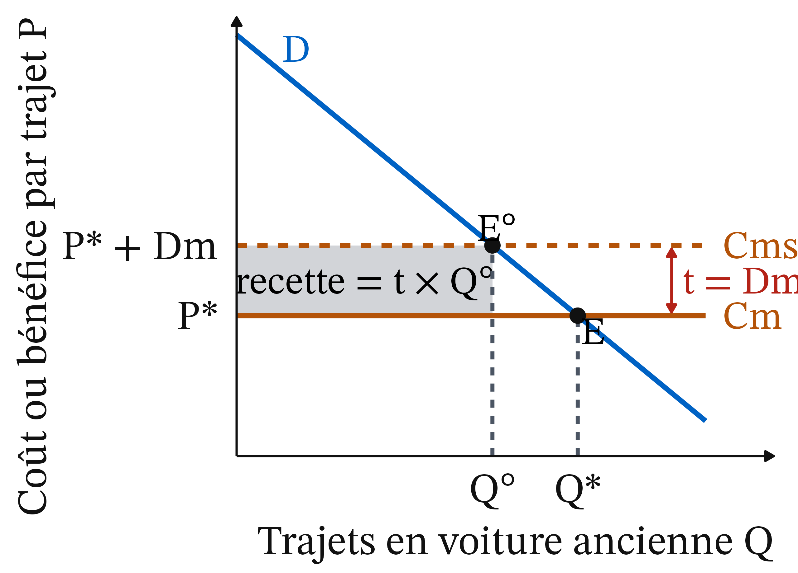
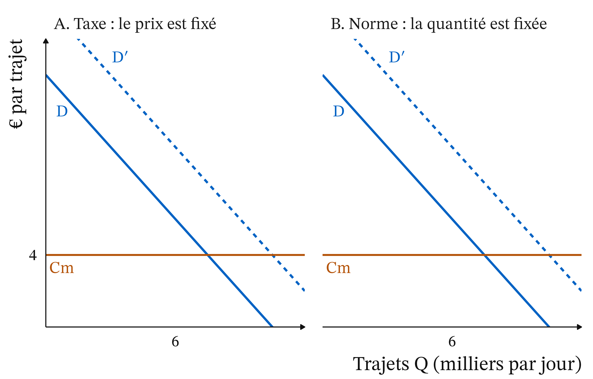
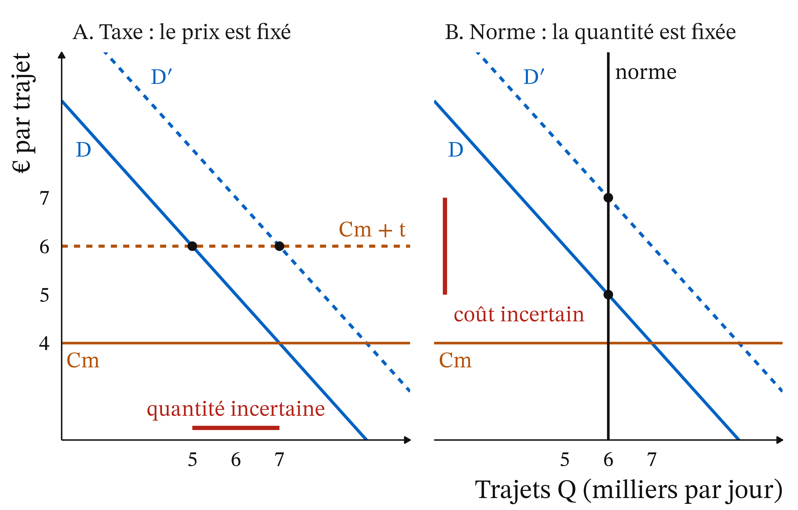
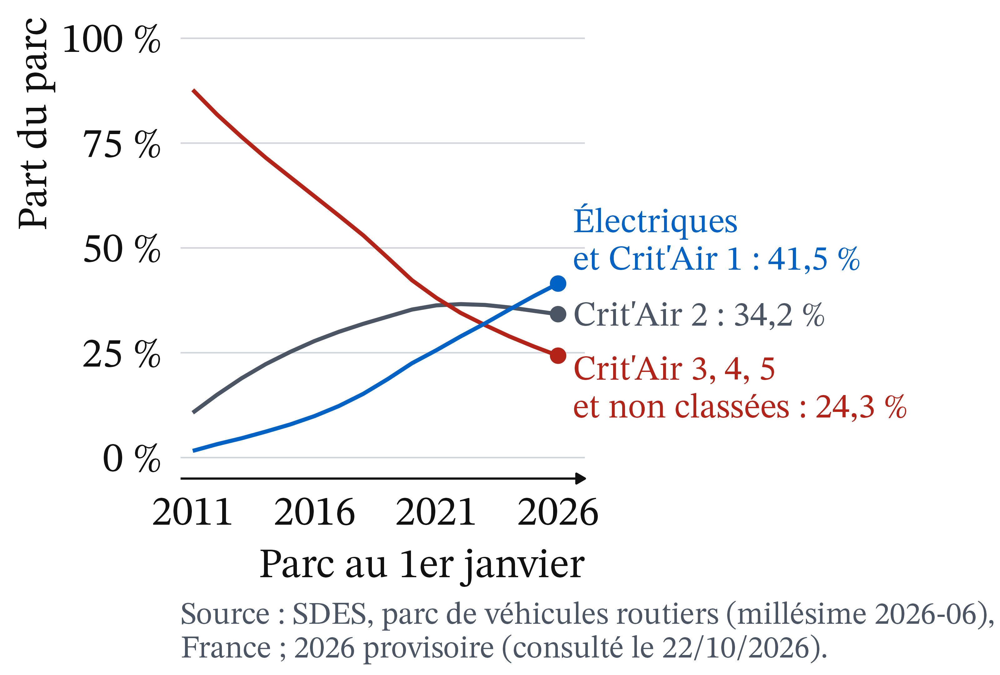
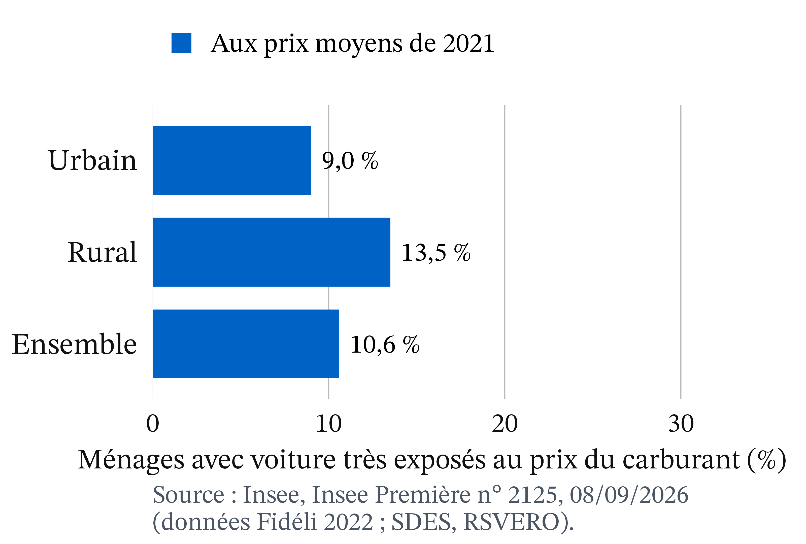
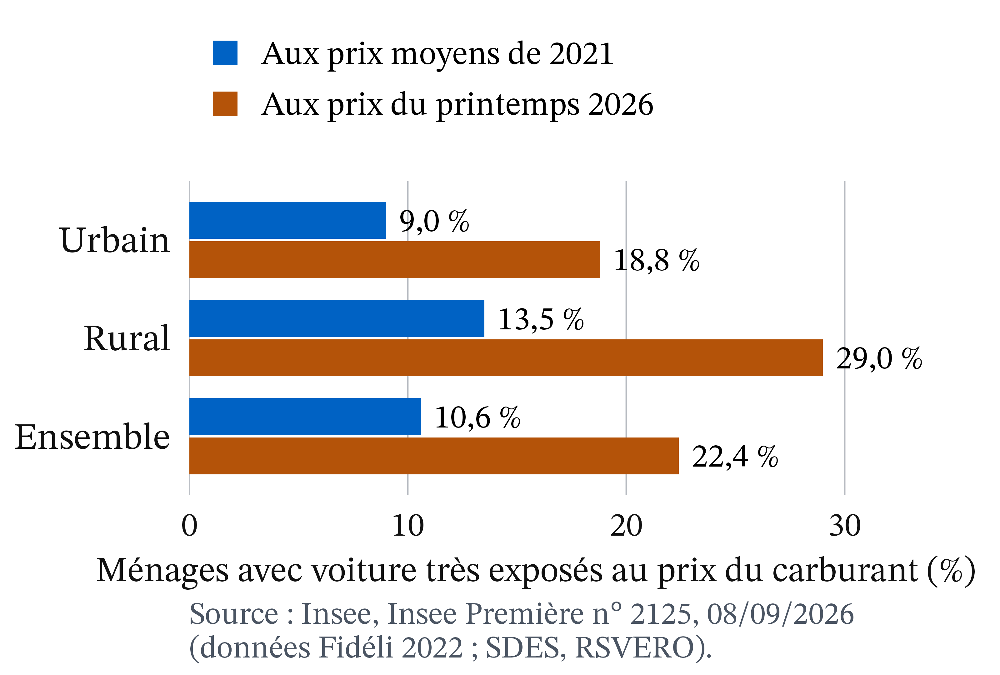

Le fait de départ : l’Assemblée examine l’abrogation des ZFE (08/10/2026)
Le 8 octobre 2026, l’Assemblée nationale examine une proposition de loi visant à abroger les zones à faibles émissions (ZFE) (n° 2970).
Le débat s’arrête à minuit sans vote : le texte n’est pas adopté (LCP, 09/10/2026).
Les ZFE, déjà maintenues en mai par une censure de procédure du Conseil constitutionnel (décision n° 2026-903 DC), restent en vigueur.
Question de la séance : qui doit payer la transition automobile, le pollueur, le contribuable ou le riverain ?
Une ZFE interdit l’entrée des voitures selon leur vignette Crit’Air
Lyon, rue Sœur Bouvier, février 2025. Photo : Sebleouf, CC BY-SA 4.0, Wikimedia Commons.
Une ZFE interdit aux voitures les plus polluantes, repérées par leur vignette Crit’Air, de circuler dans une agglomération.
Sur ce panneau, seuls entrent les électriques, Crit’Air 1 et 2.
25 agglomérations de l’Hexagone en ont une au 1er janvier 2025 (The Conversation, 11/06/2026).
Trois faits intriguent, trois outils pour y répondre
Tous admettent que la pollution de l’air nuit à la santé, mais la mesure qui la combat divise.
Les ZFE ont bien fait baisser les émissions, mais beaucoup moins que la baisse totale observée (Insee, 27/08/2026).
Les ménages modestes, qui polluent peu au total, sont souvent ceux qui doivent changer de voiture.
Trois outils : le coût marginal social ; la comparaison entre taxe, norme et subvention ; la mesure de l’effet propre d’une politique.
Rappel : externalité, coût marginal, demande comme bénéfice marginal
Externalité : l’action d’un agent modifie le bien-être d’un autre sans compensation par le marché. Le riverain respire la pollution des voitures ; personne ne le paie.
Coût marginal (Cm) : le coût d’une unité de plus. La courbe d’offre se lit comme une courbe de coût marginal.
La demande comme bénéfice marginal : la hauteur de D, pour une quantité donnée, mesure ce que vaut la dernière unité pour celui qui l’achète.
Rappel : surplus, perte sèche, incidence, positif et normatif
Surplus et perte sèche : le surplus est l’écart entre ce qu’une unité vaut et ce qu’elle coûte ; la perte sèche est le surplus perdu quand on s’écarte de la meilleure quantité (CM 4).
Incidence : celui qui verse un impôt n’est pas toujours celui qui le supporte (CM 2).
Positif et normatif : l’analyse positive décrit ce qui est ; l’analyse normative dit ce qui devrait être, à partir d’un jugement de valeur.
Pigou (1920) : le coût privé est inférieur au coût social
Vers 1920 · John Palmer Clarke, domaine public, Wikimedia Commons
Arthur Cecil Pigou (1920), The Economics of Welfare · école néoclassique (Cambridge). Quand une activité impose à d’autres un coût qu’elle ne paie pas, le coût privé est inférieur au coût social, et le marché produit trop. Une taxe égale au dommage causé par la dernière unité rapproche le coût privé du coût social.
L’automobiliste compte le carburant, l’usure et le temps, pas les oxydes d’azote et les particules fines que respirent les riverains.
Dommage marginal et coût marginal social : Cms = Cm + Dm
Définition 1 (Dommage marginal) Le dommage marginal (Dm) est le coût que la dernière unité produite ou consommée impose aux autres, sans compensation : ici, le coût pour la santé des riverains d’un trajet de plus en voiture polluante.
Définition 2 (Coût marginal social) Le coût marginal social (Cms) est le coût d’une unité de plus pour l’ensemble de la société : Cms = Cm + Dm. Quand il y a une externalité négative, Cms est au-dessus de Cm.
Pollution de l’air : 14 741 décès prématurés attribuables aux PM2,5 en 2023

Estimations de l’Agence européenne pour l’environnement, France : 38 447 décès prématurés en 2005, 14 741 en 2023.
Toutes sources de particules fines, pas seulement les voitures : l’ordre de grandeur de l’enjeu, pas le dommage d’un trajet.
Source : Eurostat, sdg_11_52, estimations de l’AEE (consulté le 22/10/2026).
Optimum social : la demande coupe le coût marginal social en Q°
Définition 3 (Optimum social) La quantité socialement optimale, notée Q°, est celle où le bénéfice marginal (la demande D) égale le coût marginal social. Le marché, lui, s’arrête en Q*, où la demande égale le coût marginal privé. Avec une externalité négative, Q* est supérieur à Q° : on roule trop.
L’optimum n’est pas « zéro pollution » : un trajet qui vaut 20 € à son auteur et coûte 6 € à la société mérite d’être fait.
Coase (1960) : le dommage est réciproque, le droit décide qui paie
2003 · University of Chicago Law School, licence Attribution, Wikimedia Commons
Ronald Coase (1960), « The Problem of Social Cost » · école de Chicago, économie du droit. Le dommage est réciproque : protéger le riverain gêne l’automobiliste, et laisser rouler l’automobiliste gêne le riverain. Si les droits sont clairs et la négociation peu coûteuse, les parties trouvent entre elles la bonne quantité, quel que soit celui qui détient le droit.
Ce droit décide seulement de qui paie l’autre.
Coûts de transaction : l’État tranche à la place des parties
Si les riverains ont droit à un air sain, les automobilistes paient pour polluer.
Si les automobilistes ont le droit de rouler, les riverains, ou le contribuable, paient pour qu’ils roulent moins.
Dans une grande agglomération, automobilistes et riverains se comptent par centaines de milliers : les coûts de transaction (se trouver, négocier, faire respecter l’accord) sont trop élevés.
L’État tranche : choisir un instrument, c’est aussi choisir qui détient le droit, et donc qui paie.
Weitzman (1974) : fixer le prix ou fixer la quantité
2015 · European University Institute, CC BY-SA 2.0, recadré, Wikimedia Commons
Martin Weitzman (1974), « Prices vs. Quantities » · économie publique. Le régulateur connaît mal ce que coûtera l’effort de dépollution : une taxe fixe le prix de la pollution mais laisse la quantité incertaine, une norme fixe la quantité mais laisse le coût incertain.
Il vaut mieux fixer la quantité quand le dommage grimpe vite au-delà d’un seuil, plus vite que le coût de l’effort, et fixer le prix quand le dommage de chaque unité est à peu près le même.
Taxe pigouvienne, norme, subvention : trois instruments pour approcher Q°
Exemple chiffré (2/6) : la perte sèche vaut 2 000 € par jour

Le 6 001e trajet vaut 6 € et coûte 6 € à la société : il ne perd rien.
Le 8 000e vaut 4 € et coûte 6 € : il perd 2 €.
Perte sèche = ½ × 2 × 2 = 2 000 € par jour.
Taxe pigouvienne (1/2) : avec t = Dm, le conducteur paie Cms

Avec une taxe unitaire t = Dm = 2 €, le trajet coûte 4 + 2 = 6 € au conducteur.
Il s’arrête de lui-même en Q°, soit 6 000 trajets : la taxe rapproche le coût privé du coût social.
Taxe pigouvienne (2/2) : une recette t × Q° de 12 000 € par jour
Le rectangle gris est la recette : 2 × 6 = 12 000 € par jour.
C’est exactement le dommage restant à l’optimum, 2 × 6 000 = 12 000 €, que l’État pourrait rendre aux riverains.
Exemple chiffré (3/6) : la taxe supprime exactement la perte sèche

Conducteurs : 12 000 € de taxe et 2 000 € de surplus perdu.
Riverains : 2 × 2 000 = 4 000 € de pollution en moins.
Société : 4 000 − 2 000 = +2 000 €, la perte sèche supprimée.
Point d’attention : la recette de la taxe est un transfert
« La taxe coûte plus cher aux conducteurs, donc à la société. » Ce raisonnement est faux.
Les 12 000 € de taxe sont un transfert vers l’État, qui peut les rendre, pas une perte.
Pour la société, la taxe et la norme bien ciblée font le même gain : +2 000 € par jour.
Seul change qui paie.
Exemple chiffré (4/6) : une norme bien ciblée atteint aussi +2 000 €
La ville interdit les 2 000 trajets qui valent le moins, ceux qui valent entre 4 et 6 € à leurs auteurs.
On arrive aussi à 6 000 trajets et à +2 000 € : la perte sèche disparaît, comme avec la taxe.
Mais l’État ne perçoit rien.
Les conducteurs qui restent ne paient rien : seuls paient ceux qui sont écartés (2 000 €).
Exemple chiffré (5/6) : la norme mal ciblée, un bilan de −8 000 €
Une ZFE n’interdit pas les trajets les moins utiles, elle interdit des vignettes. Supposons qu’elle écarte 2 000 trajets qui valent en moyenne 10 €, par exemple ceux de salariés sans transport en commun.
Ces conducteurs perdent chacun 10 − 4 = 6 €, soit 12 000 € par jour.
La pollution évitée reste de 4 000 €.
Bilan : 4 000 − 12 000 = −8 000 € par jour.
Exemple chiffré (6/6) : la subvention fait payer le contribuable
L’État paie 2 € par trajet évité.
Rouler coûte alors 4 € plus les 2 € auxquels on renonce : 6 € par trajet.
On retombe à 6 000 trajets, comme avec la taxe.
Mais c’est le contribuable qui paie : 2 × 2 000 = 4 000 € par jour.
Même objectif, quatre payeurs : l’instrument répartit le coût
Chiffres fictifs, montants par jour ; 6 000 trajets avec les trois instruments.
Instrument
Qui paie ?
Budget public
Taxe t = 2 €
les conducteurs : 12 000 € de taxe et 2 000 € de surplus
+12 000 €
Norme bien ciblée
les conducteurs écartés : 2 000 €
0
Subvention de 2 €
les contribuables : 4 000 €
−4 000 €
Rien (8 000 trajets)
les riverains : 16 000 € de pollution
0
Avec les trois instruments, les riverains subissent encore 2 × 6 000 = 12 000 € de pollution par jour.
Lecture du tableau : chaque instrument désigne un payeur différent
Taxe : principe pollueur-payeur ; les pollueurs paient le dommage qu’ils causent encore (12 000 €).
Norme : ils ne paient que l’effort de réduction (2 000 €) ; les riverains gardent 12 000 € de pollution à leur charge.
Subvention : le contribuable paie. Rien : les riverains paient tout.
C’est l’idée de Coase : le choix de l’instrument est d’abord un choix de répartition.
Prix ou quantité (1/3) : la ville connaît mal la demande

On reprend Cm = 4 € et Dm = 2 €.
Demande basse (P = 11 − Q) ou haute (P = 13 − Q), une chance sur deux.
En moyenne, P = 12 − Q : la ville vise 6 000 trajets.
Prix ou quantité (2/3) : avec une taxe, la quantité est incertaine
Prix ou quantité (3/3) : avec une norme, le coût est incertain

Norme de 6 000 trajets : sans elle, on ferait 7 000 ou 9 000 trajets.
Le dernier trajet permis vaut 5 € ou 7 €, soit 1 € ou 3 € de plus que son coût.
La quantité est connue, ce coût ne l’est pas.
Weitzman : la taxe si le dommage est constant, la norme s’il grimpe
Dommage constant (Dm = 2 € toujours) : le vrai optimum est 5 000 trajets si la demande est basse, 7 000 si elle est haute. La taxe tombe juste ; la norme se trompe de 1 000 trajets à chaque fois.
Chaque erreur coûte un petit triangle : ½ × 1 × 1 = 500 € de perte par jour.
Dommage qui grimpe vite au-delà de 6 000 trajets : dépasser coûte très cher ; la norme, qui garantit 6 000, l’emporte.
Application : le NO₂ appelle une norme, le CO₂ un prix
NO₂ : le droit européen fixe des valeurs limites de concentration ; la France a été condamnée par la Cour de justice de l’Union européenne pour les avoir dépassées « de manière systématique et persistante » (The Conversation, 11/06/2026).
Au-delà du seuil, la sanction rend le dépassement très coûteux : argument de Weitzman pour un instrument qui garantit le résultat.
CO₂ : le dommage d’une tonne de plus est à peu près constant, car il dépend du stock mondial ; cela plaide pour un prix.
Contrefactuel et effet propre : comparer avec la situation sans politique
Définition 5 (Contrefactuel et effet propre) Le contrefactuel est ce qui se serait passé sans la politique. On ne l’observe jamais : on l’estime en suivant des territoires comparables qui ne l’ont pas appliquée. L’effet propre de la politique est l’écart entre ce qu’on observe et ce contrefactuel.
C’est la méthode de l’évaluation de l’encadrement des loyers (CM 4), qui compare les communes encadrées à des communes semblables.
Exemple chiffré : deux différences isolent l’effet propre d’une ZFE
Chiffres fictifs. Émissions des villes à ZFE : de 100 à 61 en cinq ans. Villes témoins comparables, sans ZFE : de 100 à 66.
Première différence, l’avant-après dans chaque groupe : −39 % avec ZFE, −34 % sans ; le parc se renouvelle partout.
Seconde différence, l’écart entre les groupes : −39 − (−34) = −5 points.
L’effet propre de la ZFE est donc de 5 points, et non de 39 % : ce sont les doubles différences.
Émissions des voitures : −38,9 % d’oxydes d’azote en cinq ans
L’Insee suit neuf intercommunalités à ZFE pour les voitures (jusqu’en 2023, hors Grand Paris ; figure : six d’entre elles), de trois ans avant à deux ans après.
La vignette, pas le kilomètre : les voitures des résidents ne roulent pas significativement moins ; la ZFE change quelle voiture on conduit, pas combien on roule.
Des voitures qui partaient déjà : les Crit’Air 5 et non classées pesaient environ 6 % du parc trois ans avant (223 400 voitures sur 3,6 millions).
Peu de contrôles : environ 12 600 contraventions liées aux ZFE en 2019, 2 300 en 2024.
Parc national : les Crit’Air 3 et plus passent de 87,7 % à 24,3 %

France entière, ZFE ou non, parc au 1er janvier.
Crit’Air 3, 4, 5 et non classées : 87,7 % en 2011, 24,3 % en 2026.
Électriques et Crit’Air 1 : de 1,6 % à 41,5 %. Les vieilles vignettes disparaissent d’elles-mêmes.
Source : SDES, parc de véhicules routiers (millésime 2026-06), somme nationale par l’auteur (consulté le 22/10/2026).
Par revenu : l’effort pèse sur les ménages modestes, qui polluent peu
L’effet de la ZFE est « plus marqué dans les communes à revenu intermédiaire ou modeste », où les voitures sont plus anciennes (Insee, 27/08/2026).
Sur huit villes étudiées, employés et ouvriers sont les plus touchés dans six (C. Liotta, The Conversation, 27/11/2024).
En Île-de-France, les déplacements des 20 % les plus pauvres ne représentent que 9 % de la pollution automobile (A. Poulhès, The Conversation, 23/06/2025).
Par territoire : les vieilles voitures partent vers des territoires éloignés
Une partie des voitures polluantes est revendue d’occasion dans des territoires sans restriction, et non voisins de la zone.
Dans les communes proches, le parc verdit comme ailleurs (Insee, 27/08/2026).
Une taxe sur le carburant ou au kilomètre frapperait d’autres ménages que la ZFE.
Changer d’instrument, c’est changer de perdants.
Exposition au prix du carburant : les ménages ruraux plus souvent touchés

Part des ménages avec voiture qui consacrent plus d’un mois de revenu par an au carburant.
Aux prix de 2021 : 13,5 % dans les intercommunalités rurales, 9,0 % dans les urbaines, 10,6 % dans l’ensemble.
Aux prix du printemps 2026, la part exposée doublerait à peu près

Scénario Insee (revenus et kilomètres de 2021), aux prix du printemps 2026 (2,0 € le litre d’essence, 2,2 € le gazole) : ce serait 29,0 % en rural, 18,8 % en urbain.
L’écart passe de 4,5 à 10,2 points ; le rapport reste voisin de 1,5.
Prix à la pompe : en octobre 2026, au-dessus du scénario de l’Insee
Printemps 2026, en gris : en moyenne 2,04 € le litre de sans plomb 95, 2,14 € le gazole, proche du scénario.
Semaine du 19 octobre : gazole 2,35 €, sans plomb 95 2,23 €.
Les parts du scénario 2026 de l’Insee sont un plancher, pas un plafond.
Source : Commission européenne, Weekly Oil Bulletin, prix toutes taxes (consulté le 22/10/2026).
Par génération : une taxe sur le carburant pèserait surtout sur les actifs
Parmi les ménages très exposés au prix du carburant, 77,9 % ont au moins un membre en emploi, contre 70,9 % pour l’ensemble des ménages motorisés.
Les ménages sans emploi de 65 ans ou plus n’en représentent que 10,2 %, contre 24,3 % (Insee Première n° 2125, données 2021).
La charge tomberait surtout sur les actifs qui roulent loin pour travailler.
Chaîne de causalité d’une ZFE : coûts et bénéfices ne coïncident pas
Source : synthèse de la page (Insee Analyses n° 124, 27/08/2026 ; Insee Première n° 2125, 08/09/2026).
Étape
Ce qui se passe
Qui est concerné
1. La règle
Vignettes anciennes interdites dans la zone
Propriétaires de voitures anciennes
2. La réaction
Changer de voiture, la revendre, renoncer à entrer
Surtout ménages modestes et intermédiaires
3. Le parc
Moins de voitures polluantes dans la zone, certaines revendues hors zone
Territoires sans restriction, non voisins
4. L’air
Moins d’émissions, quelques points au-delà du tendanciel
Habitants de la zone
Le coût d’adaptation tombe à l’étape 2, le bénéfice sanitaire à l’étape 4 : ce ne sont pas toujours les mêmes personnes.
Leasing social : une subvention financée par les certificats d’économies d’énergie
En 2025, 50 000 aides pour louer une voiture électrique, jusqu’à 5 700 € pour les ménages très modestes ; environ 49 600 utilisées (L’Info durable, 30/12/2025).
350 M€ financés par les certificats d’économies d’énergie, et non par l’impôt : les vendeurs d’énergie peuvent en répercuter le coût sur tous les consommateurs (incidence).
Risque d’effet d’aubaine : le parc verdit fortement même sans ZFE.
Controverse : garder les ZFE, et qui doit en payer le coût
Analyse positive (ce qui est : mécanismes et effets, vérifiables)
Externalité : sans intervention, on roule plus que l’optimum.
Effet propre modeste : 4,6 points sur 38,9 % pour les oxydes d’azote (Insee, 27/08/2026).
La norme par vignette ne rapporte rien et cible l’âge de la voiture ; une taxe rapporte une recette qui peut compenser les perdants.
Analyse normative (ce qui devrait être : dépend de jugements de valeur)
Qui détient le droit, le riverain ou l’automobiliste ? Efficacité ou équité ? Quel poids pour la santé face à l’accès à l’emploi ?
Positions en présence et écoles : Pigou, Coase, Weitzman
Supprimer : mesure injuste pour les ménages qui ne peuvent pas changer de voiture (France 24, 29/05/2025), pour un effet de quelques points.
Liotta : les ZFE réduisent l’accès à l’emploi des plus modestes ; les accompagner pour les rendre plus égalitaires. Poulhès : l’argument social ne justifie pas de les supprimer, les plus pauvres polluent peu.
Écoles : Pigou corrige par un prix, la taxe ; Coase objecte que l’intervention a elle-même un coût ; pour Weitzman, tout dépend de l’erreur la plus grave.
Conseil constitutionnel : une censure de procédure, pas de fond
État au 21 octobre 2026. Le 21 mai 2026, le Conseil constitutionnel a censuré l’article 37 de la loi de simplification de la vie économique, qui supprimait les ZFE, parce qu’il avait été ajouté au projet sans lien, « même indirect », avec son contenu initial (article 45 de la Constitution) ; il ne s’est pas prononcé sur le fond (décision n° 2026-903 DC). Les ZFE restent donc en vigueur.
À retenir
Externalité négative : Cms = Cm + Dm dépasse le coût privé ; le marché produit trop.
La taxe pigouvienne (t = Dm) mène à Q° ; sa recette est un transfert, pas une perte.
Taxe, norme, subvention : même quantité, payeurs différents (Coase).
Dommage qui grimpe vite : fixer la quantité ; dommage constant : fixer le prix (Weitzman).
Effet propre contre un contrefactuel : 4,6 points sur 38,9 % (Insee, 2026).
Qui doit payer relève d’un jugement ; l’analyse dit qui paie.
Plan de dissertation : ce que dit l’outil, ce qu’il ne tranche pas
Sujet : faut-il garder les ZFE, et qui doit payer la transition automobile ?
I. Ce que dit l’outil (positif)
A. Externalité : Cms > Cm, on roule trop ; taxe, norme et subvention visent Q° avec des payeurs différents.
B. L’effet propre des ZFE est modeste, et leur coût pèse sur les ménages modestes.
II. Ce qu’il ne tranche pas (normatif)
A. Qui détient le droit : le riverain ou l’automobiliste (Coase).
B. Efficacité ou équité : santé des riverains contre accès à l’emploi.

 Vers 1920 · John Palmer Clarke, domaine public, Wikimedia Commons
Vers 1920 · John Palmer Clarke, domaine public, Wikimedia Commons 2003 · University of Chicago Law School, licence Attribution, Wikimedia Commons
2003 · University of Chicago Law School, licence Attribution, Wikimedia Commons 2015 · European University Institute, CC BY-SA 2.0, recadré, Wikimedia Commons
2015 · European University Institute, CC BY-SA 2.0, recadré, Wikimedia Commons